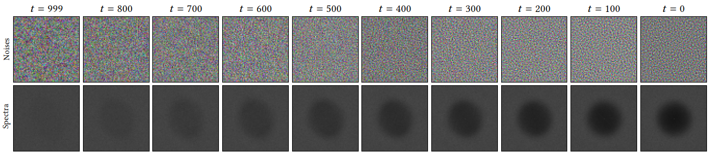
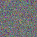

Most of the existing diffusion models use Gaussian noise for training and sampling across all time steps, which may not optimally account for the frequency contents reconstructed by the denoising network. Despite the diverse applications of correlated noise in computer graphics, its potential for improving the training process has been underexplored. In this paper, we introduce a novel and general class of diffusion models taking correlated noise within and across images into account. More specifically, we propose a time-varying noise model to incorporate correlated noise into the training process, as well as a method for fast generation of correlated noise mask. Our model is built upon deterministic diffusion models and utilizes blue noise to help improve the generation quality compared to using Gaussian white (random) noise only. Further, our framework allows introducing correlation across images within a single mini-batch to improve gradient flow. We perform both qualitative and quantitative evaluations on a variety of datasets using our method, achieving improvements on different tasks over existing deterministic diffusion models in terms of FID metric.
Blue noise refers to a distribution with no energy in the low-frequency region in its power spectrum. We propose to use time-varying noise based on the time steps, by blending Gaussian (white) noise with Gaussian blue noise smoothly from left to right, as shown below.

Using Gaussian blue noise for denoising diffusion process better preserves fine details and the integrity of the content, while noise magnitude is below 100%.

First, we need to generate Gaussian blue noise on the fly. We propose a fast method to generate Gaussian blue noise masks by using a precomputed matrix (L) from blue noise that are generated offline. To get higher-dimensional Gaussian blue noise masks, we tile different realizations of 64x64 masks.
Then, we propose a novel and general diffusion model using time-varying noise. More specifically, we propose to use Gaussian blue noise by interpolating Gaussian noise and Gaussian blue noise across time steps to improve the training of diffusion models.
In addition to the results in the main paper, we show here the videos of generated image sequences using DDIM, IADB and Ours trained on different datasets.

Init noise
Generated image (Ours)